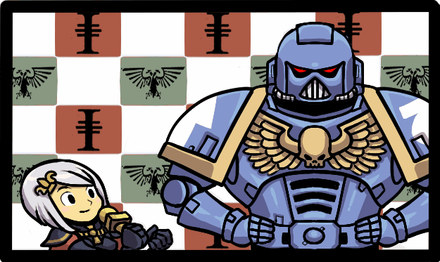
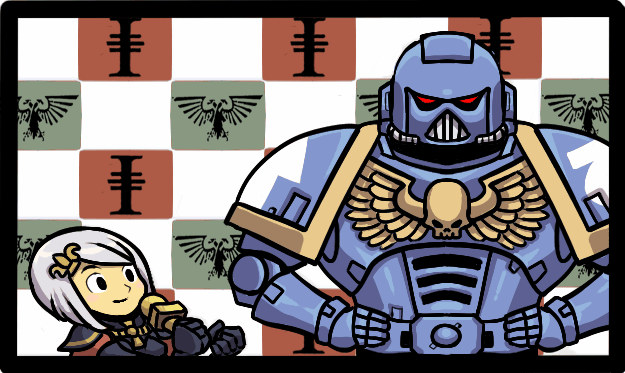

Favorite games
Hollow Knight

Hollow Knight is a 2017 Metroidvania video game developed and published by independent developer Team Cherry. In the game, the player controls the Knight, a nameless insectoid warrior. The Knight explores Hallownest, a fallen kingdom plagued by a supernatural disease. The game is set in diverse subterranean locations, and it features friendly and hostile bug-like characters and numerous bosses. Players have the opportunity to unlock new abilities as they explore each location, along with pieces of lore and flavor text that are spread throughout the kingdom
Binding of Isaac

The Binding of Isaac is a roguelike video game designed by independent developers Edmund McMillen and Florian Himsl. It was released in 2011 for Microsoft Windows, then ported to OS X, and Linux. The game's title and plot are inspired by the Biblical story of the Binding of Isaac. In the game, Isaac's mother receives a message from God demanding the life of her son as proof of her faith, and Isaac, fearing for his life, flees into the monster-filled basement of their home where he must fight to survive. Players control Isaac or one of seven other unlockable characters through a procedurally generated dungeon in a roguelike manner, fashioned after those of The Legend of Zelda, defeating monsters in real-time combat while collecting items and power-ups to defeat bosses and eventually Isaac's mother.
Metal Gear Rising

Metal Gear Rising: Revengeance is a 2013 action hack and slash game co-developed by PlatinumGames and Kojima Productions and published by Konami Digital Entertainment. Released for the PlayStation 3, Xbox 360, Nvidia Shield TV, and Microsoft Windows, it is a spin-off in the Metal Gear series, and is set four years after the events of Metal Gear Solid 4: Guns of the Patriots. In the game, players control Raiden, a cyborg who confronts the private military company Desperado Enforcement, with the gameplay focusing on fighting enemies using a sword and other weapons to perform combos and counterattacks. Through the use of Blade Mode, Raiden can cut cyborgs in slow motion and steal parts stored in their bodies. The series' usual stealth elements are also optional to reduce combat.
 
